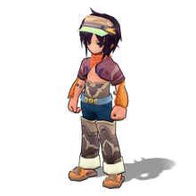
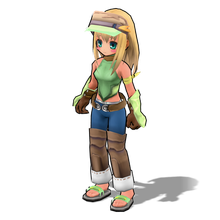
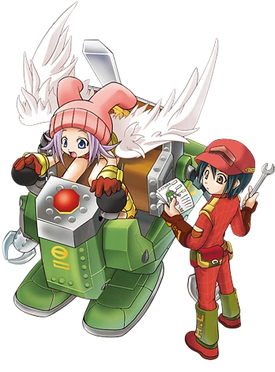
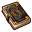
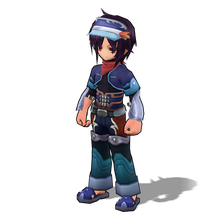
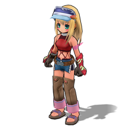
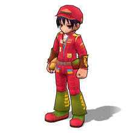
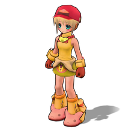
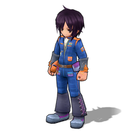
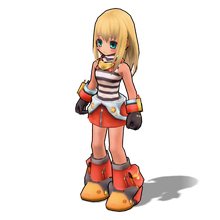

Sage Master
Sage Master

Heatproof set
Lv 45

How to get
- All pieces from Ryu, a reward of the Lv 45 Armor Quest
Technical job · Backpacker
A job that builds robots, rides them into battle and repairs machinery.

Requirement: Blacksmith at any Job Level.
Talk to the Sage Master and choose to browse the items on top of the shelves.
Buy a

Forbidden Book for 100,000 G. Machinery AssemblyActive crafting skill · Max Lv 3
Machinery AssemblyActive crafting skill · Max Lv 3Opens the Machinery Assembly synthesis interface for the selected skill level.
| Lv | SP | Cast time | Cooldown |
|---|---|---|---|
| 1 | 3 | 1 sec | 1 sec |
| 2 | 5 | 1 sec | 1 sec |
| 3 | 7 | 1 sec | 1 sec |
 Machinery Repair Kit CraftActive crafting skill · Max Lv 5
Machinery Repair Kit CraftActive crafting skill · Max Lv 5Opens the Machinery Repair Kit Craft synthesis interface for the selected skill level.
| Lv | SP | Cast time | Cooldown |
|---|---|---|---|
| 1 | 3 | 1 sec | 1 sec |
| 2 | 6 | 1 sec | 1 sec |
| 3 | 9 | 1 sec | 1 sec |
| 4 | 12 | 1 sec | 1 sec |
| 5 | 15 | 1 sec | 1 sec |
 Machinery KnowledgePassive · Max Lv 1Pilot MasteryPassive · Max Lv 1
Machinery KnowledgePassive · Max Lv 1Pilot MasteryPassive · Max Lv 1Allows the character to equip and ride robot-type ride partners.
| Lv | Effect |
|---|---|
| 1 | Unlocks robot ride partner equipment. |
Increase Robot Power RegenerationPassive · Max Lv 5| Lv | SP recovery bonus |
|---|---|
| 1 | +1 |
| 2 | +2 |
| 3 | +3 |
| 4 | +4 |
| 5 | +5 |
Increase Robot HPPassive · Max Lv 5| Lv | Scaling rate |
|---|---|
| 1 | 10% |
| 2 | 13% |
| 3 | 16% |
| 4 | 19% |
| 5 | 22% |
| Lv | SP | Cast time | Cooldown | Damage rate |
|---|---|---|---|---|
| 1 | 4 | 1.5 sec | 1 sec | 360% |
| 2 | 5 | 1.75 sec | 1 sec | 400% |
| 3 | 6 | 2 sec | 1 sec | 440% |
| 4 | 7 | 2.25 sec | 1 sec | 480% |
| 5 | 8 | 2.5 sec | 1 sec | 520% |
Increase Robot Attack AccuracyPassive · Max Lv 5| Lv | S.HIT scaling | L.HIT scaling |
|---|---|---|
| 1 | 10% | 10% |
| 2 | 12% | 12% |
| 3 | 14% | 14% |
| 4 | 16% | 16% |
| 5 | 18% | 18% |
Increase Robot DefensePassive · Max Lv 5| Lv | Additive DEF scaling | Additive M.DEF scaling |
|---|---|---|
| 1 | 10% | 10% |
| 2 | 13% | 13% |
| 3 | 16% | 16% |
| 4 | 19% | 19% |
| 5 | 22% | 22% |
| Lv | SP | Cast time | Cooldown | Duration | S.HIT/L.HIT reduction |
|---|---|---|---|---|---|
| 1 | 25 | 1 sec | 1 sec | 10 sec | 10% |
| 2 | 30 | 1 sec | 2 sec | 15 sec | 20% |
| 3 | 35 | 1 sec | 3 sec | 20 sec | 30% |
Increase Robot DodgePassive · Max Lv 5| Lv | S.AVOID scaling | L.AVOID scaling |
|---|---|---|
| 1 | 10% | 10% |
| 2 | 13% | 13% |
| 3 | 16% | 16% |
| 4 | 19% | 19% |
| 5 | 22% | 22% |
Increase Robot Attack StrengthPassive · Max Lv 5| Lv | ATK scaling | MATK scaling |
|---|---|---|
| 1 | 10% | 10% |
| 2 | 12% | 12% |
| 3 | 14% | 14% |
| 4 | 16% | 16% |
| 5 | 18% | 18% |
| Lv | SP | Cast time | Cooldown | Explosion delay | Damage rate | Caster movement |
|---|---|---|---|---|---|---|
| 1 | 20 | 0.5 sec | 4 sec | 3 sec | 400% | Up to 1 cell |
| 2 | 23 | 0.5 sec | 4.5 sec | 3 sec | 400% | Up to 2 cells |
| 3 | 26 | 0.5 sec | 5 sec | 3 sec | 400% | Up to 3 cells |
| 4 | 29 | 0.5 sec | 5.5 sec | 3 sec | 400% | Up to 3 cells |
| 5 | 32 | 0.5 sec | 6 sec | 3 sec | 400% | Up to 4 cells |
Teleports a short distance within range while riding a Machinist robot.
| Lv | SP | Cast time | Cooldown |
|---|---|---|---|
| 1 | 10 | 1.5 sec | 0 sec |
| 2 | 12 | 1.5 sec | 0 sec |
| 3 | 14 | 1.5 sec | 0 sec |
| 4 | 16 | 1.5 sec | 0 sec |
| 5 | 18 | 1.5 sec | 0 sec |
| Lv | SP | Cast time | Cooldown | Duration | ATK effect |
|---|---|---|---|---|---|
| 1 | 16 | 1.5 sec | 3 sec | 10 sec | +100% current Min ATK and Max ATK |
| 2 | 24 | 3 sec | 3 sec | 30 sec | +100% current Min ATK and Max ATK |
| 3 | 32 | 4.5 sec | 3 sec | 60 sec | +100% current Min ATK and Max ATK |
Deals Neutral magical damage and may inflict Frozen if the hit deals damage.
| Lv | MP | Cast time | Cooldown | Damage rate | Frozen chance | Frozen duration |
|---|---|---|---|---|---|---|
| 1 | 10 | 0.5 sec | 1 sec | 115% | 35% | 6 sec |
| 2 | 14 | 1 sec | 1 sec | 135% | 40% | 7 sec |
| 3 | 18 | 1.5 sec | 1 sec | 155% | 45% | 8 sec |
| 4 | 22 | 2 sec | 1 sec | 175% | 50% | 9 sec |
| 5 | 26 | 2.5 sec | 1 sec | 195% | 55% | 10 sec |
| Lv | SP | Cast time | Cooldown | Area | Hits | Damage per hit |
|---|---|---|---|---|---|---|
| 1 | 7 | 2 sec | 2 sec | 11x11 | 6 | 80% |
| 2 | 9 | 2.5 sec | 2 sec | 11x11 | 6 | 90% |
| 3 | 11 | 3 sec | 2 sec | 13x13 | 7 | 100% |
| 4 | 13 | 3.5 sec | 2 sec | 13x13 | 7 | 110% |
| 5 | 15 | 4 sec | 2 sec | 13x13 | 8 | 120% |
MaintenancePassive · Max Lv 3Increases the riding robot's sitting HP recovery while the character is riding a robot.
| Lv | Sitting HP recovery |
|---|---|
| 1 | +30 |
| 2 | +50 |
| 3 | +100 |
Changes monster aggro; applies Confusion; area: 5x5.
| Lv | SP | Cast time | Cooldown |
|---|---|---|---|
| 1 | 16 | 0.5 sec | 1.5 sec |
| 2 | 22 | 1 sec | 1.5 sec |
| 3 | 28 | 1.5 sec | 1.5 sec |
| 4 | 34 | 2 sec | 1.5 sec |
| 5 | 40 | 2.5 sec | 1.5 sec |
| Lv | SP | Cast time | Cooldown | Damage rate |
|---|---|---|---|---|
| 1 | 20 | 2.5 sec | 1 sec | 525% |
| 2 | 22 | 2 sec | 1 sec | 575% |
| 3 | 24 | 1.5 sec | 1 sec | 625% |
| 4 | 26 | 1 sec | 1 sec | 675% |
| 5 | 28 | 1 sec | 1 sec | 725% |
| Lv | SP | Cast time | Cooldown | Duration | Minimum ATK/MATK bonus |
|---|---|---|---|---|---|
| 1 | 20 | 1.5 sec | 0 sec | 50 sec | 15% of base minimum ATK |
| 2 | 25 | 2 sec | 0 sec | 70 sec | 25% of base minimum ATK |
| 3 | 30 | 2.5 sec | 0 sec | 90 sec | 35% of base minimum ATK |
| Lv | MP | Cast time | Cooldown | Damage rate | Stun chance | Stun duration |
|---|---|---|---|---|---|---|
| 1 | 19 | 1.5 sec | 0 sec | 75% | 20% | 4 sec |
| 2 | 23 | 1.5 sec | 0 sec | 85% | 30% | 4 sec |
| 3 | 27 | 1.5 sec | 0 sec | 95% | 40% | 4 sec |
| 4 | 31 | 1.5 sec | 0 sec | 105% | 50% | 4 sec |
| 5 | 35 | 1.5 sec | 0 sec | 115% | 60% | 4 sec |
| Lv | MP | SP | Cast time | Cooldown | Hits | Damage per hit |
|---|---|---|---|---|---|---|
| 1 | 12 | 12 | 3 sec | 1 sec | 3 | 400% |
| 2 | 15 | 15 | 3 sec | 1 sec | 3 | 450% |
| 3 | 20 | 20 | 3 sec | 1 sec | 4 | 500% |
| 4 | 24 | 24 | 3 sec | 1 sec | 4 | 550% |
| 5 | 30 | 30 | 3 sec | 1 sec | 5 | 600% |







